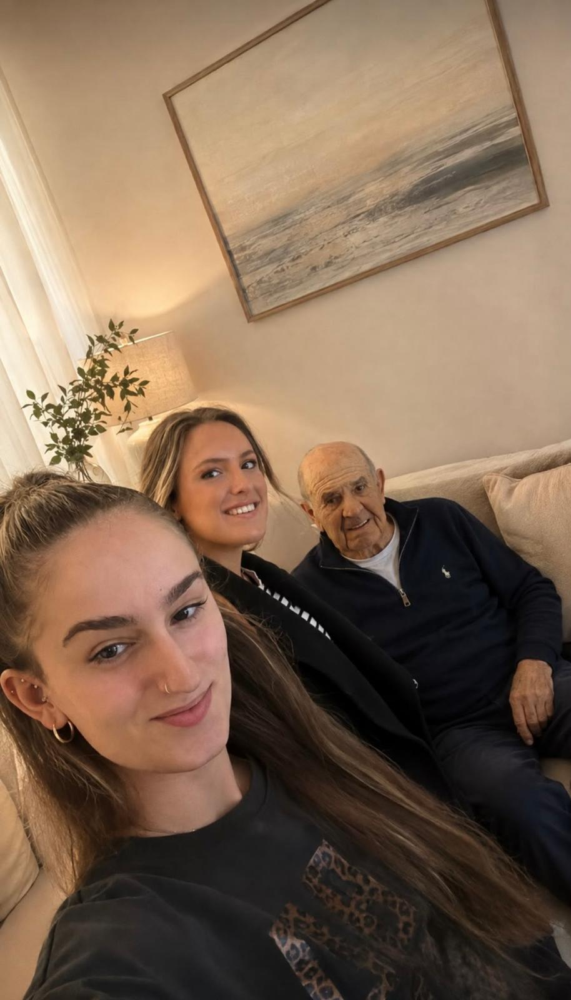
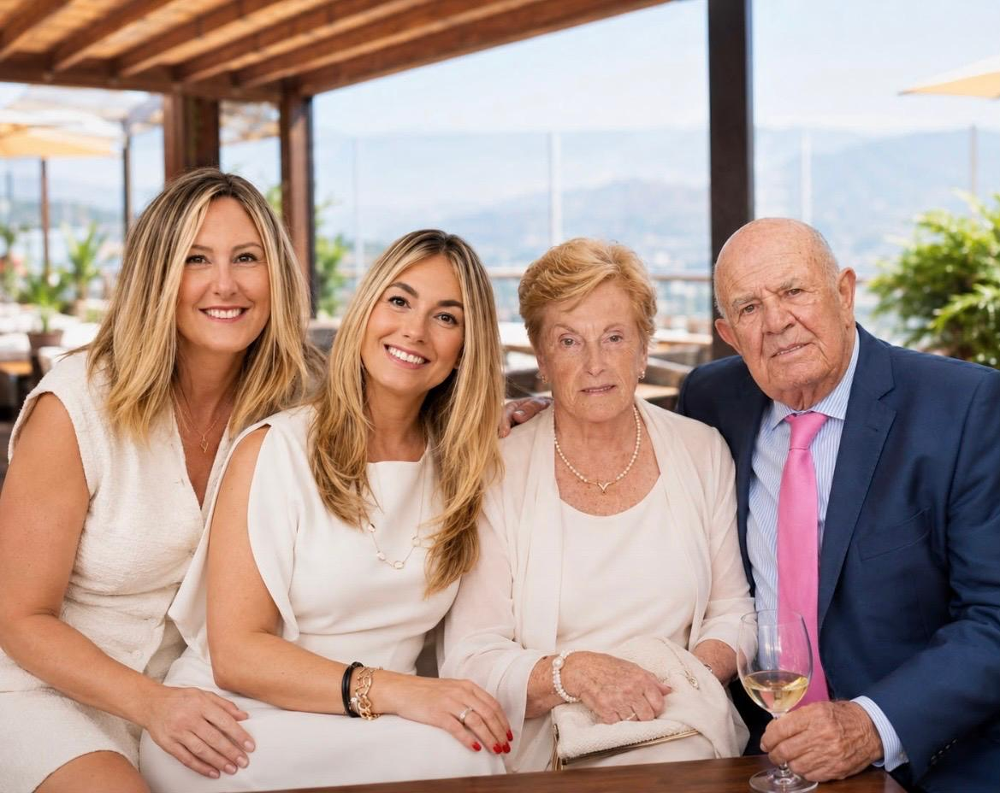
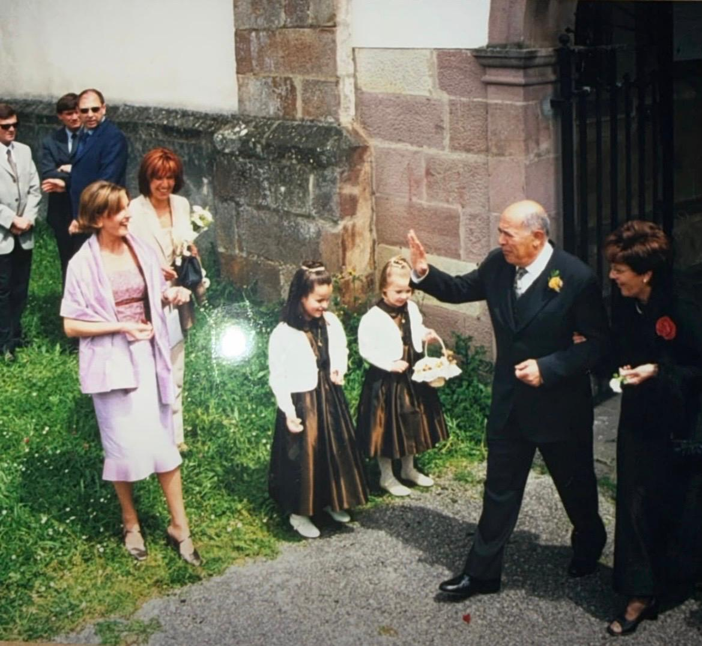

«Hay personas que nunca se van del todo».



Nunca imaginamos que tendríamos que escribirte estas palabras. Ojalá este momento no hubiera llegado, pero hoy queremos hablarte desde el lugar más profundo de nuestro corazón.
Queremos darte las gracias por habernos dado la vida, por todo lo que hiciste por nosotros, por los sacrificios que quizá nunca llegamos a comprender y por los momentos que compartimos. Nos llevamos con nosotros cada enseñanza, cada abrazo, cada sonrisa y hasta los momentos difíciles, porque todos ellos han formado parte de quienes somos.
Si alguna vez te fallamos o no supimos demostrarte todo lo que te queríamos, te pedimos perdón. Y si alguna vez tú sentiste que no podías dar más, queremos que sepas que te perdonamos también. Hoy no queremos que quede espacio para el dolor, solo para el amor.
Queremos que te marches con la tranquilidad de saber que siempre serás parte de nosotros. Tu voz, tus consejos, tus gestos y tu forma de querer vivirán en nuestros corazones mientras existamos.
No sabemos cómo será la vida cuando ya no estés físicamente, pero prometemos recordarte con una sonrisa, hablar de ti con orgullo y honrar todo lo que nos enseñaste. Nunca dejarás de ser nuestro padre.
Ahora solo deseamos que descanses, que no tengas miedo y que sientas todo el amor que te rodea. Estaremos contigo hasta donde podamos, cogiéndote la mano, acompañándote y diciéndote una y otra vez cuánto te queremos.
Gracias por ser nuestro padre. Gracias por querernos. Gracias por todo.
Te queremos con toda nuestra alma.
Hasta siempre, papá.
Una pequeña luz para recordar que, aunque no podamos verte, el cariño que sentimos por ti nunca se apagará.
El amor permanece, incluso cuando la presencia se convierte en recuerdo.